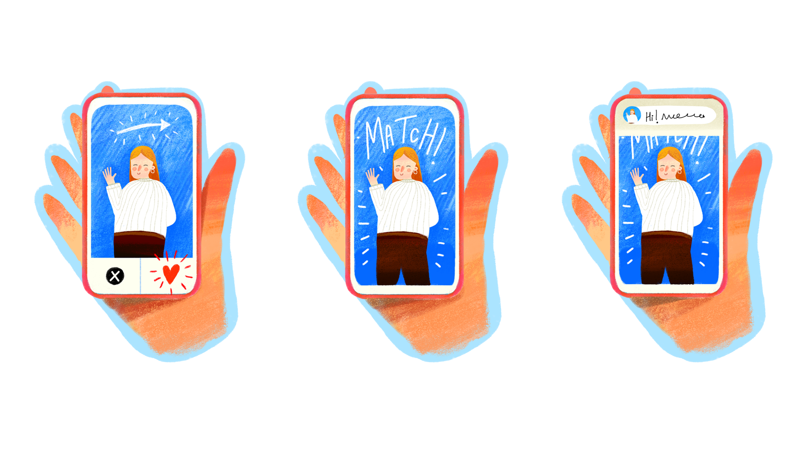

Kaha Mind
The
Dossier
Feb
Editor's Note
Welcome to this month's issue of The Dossier, where we unpack the latest mental health research and apply it to our therapeutic work.
In recent years, we have noticed a shift in how relationships begin, evolve, and end - clients speak about being left on read, suddenly blocked, slowly faded out, or kept in orbit through intermittent likes and messages. Many struggle to name what they are grieving or hurt by because there was never a clear beginning, label, or ending. Romantic uncertainty is not new. But dating apps appear to amplify it, extend it, and in some cases, normalise sustained ambiguity.
This month, we explore the relationship between dating app use and wellbeing through a recent meta-analysis study that examined the mental health impact on dating app users. Rather than taking a stance for or against dating apps, we widen the frame: How do these platforms shape relational experiences? What does current research tell us and what does it leave unanswered? We critically examine the evolving landscape of intimacy, and consider how it impacts our work with clients.
Article in Focus
Sharabi, L. L., Ou, L., Von Feldt, P. A., & Parsons, T. D. (2026). Dating app use, psychological health, and psychological well-being: A systematic review and quantitative meta-analysis. Computers in Human Behavior, 108879. https://doi.org/10.1016/j.chb.2025.108879
Key Takeaways
- Dating app use is modestly but consistently associated with poorer psychological health. Studies show higher levels of depression, anxiety, loneliness, and overall distress among dating app users compared to non-users. Importantly, these patterns appeared across different groups of people and across various dating platforms, suggesting that the association is relatively consistent.
- Uncertainty and dating app use may reinforce each other. Individuals who feel lonely or unsure about where they stand in relationships may turn to dating apps in search of clarity, validation, or connection. However, app environments, marked by constant exposure to multiple options, asynchronous communication, and sporadic rewards, can further intensify ambiguity and emotional reactivity, potentially sustaining the very uncertainty users seek to resolve.
Article in a Nutshell
This systematic review and meta-analysis synthesises 17 years of research on the psychological outcomes of dating app use, tracing the evidence from the early rise of dating apps in 2007 through to 2024.
The study explored:
- Differences in psychological wellbeing between dating app users and non-users.
- Whether factors such as platform type, sexual orientation, relationship status, and cultural context impact these differences.
Using PRISMA guidelines, the authors selected 19 studies for the meta-analysis (23 reviewed in total) from 6,057 screened studies.
Demographics of participants in the selected studies:
- Male, female, and gender diverse participants
- Ages: 18 - 75 years
- Multiple countries, predominantly Western, Educated, Industrialized, Rich, and Democratic (WEIRD) (Henrich et al., 2010)
The authors assessed the quality of the selected papers using two tests by the Joanna Briggs Institute (JBI) (Joanna Briggs Institute, 2017).
Main Findings
The researchers found that users of dating apps experienced worse psychological wellbeing than non-users. The effect was significant for psychological health in general, including dysregulation, depression, and anxiety, rather than for specific concerns. These results were consistent across demographic categories and platform-based differences.
The individual papers reviewed arrived at diverse conclusions (heterogeneity 92%), which indicates a need for more context-specific future studies. In analysing different demographic groups, the association between app use and wellbeing was stronger for participants not in a relationship and participants from WEIRD societies, suggesting that relationship status and cultural environment may shape how dating apps are experienced. The effect of sexual orientation on the data was not significant.
Limitations
The research so far has largely focused on WEIRD populations, with limited representation of queer and non-Western contexts - meaning applicability beyond these groups remains uncertain (Henrich et al., 2010). Most studies were also cross-sectional (measuring wellbeing at one point in time), so we cannot determine long-term impacts or causality, i.e., whether dating apps increase distress, or whether existing distress relates to people using them.
How Dating Apps Engage the Brain
Research suggests that dating app use activates parts of the brain involved in reward, anticipation, and novelty seeking (Sharabi et al., 2026). The experience of swiping, matching, and receiving notifications can stimulate the same brain areas that respond to other rewarding experiences, making the process feel exciting and compelling.
Importantly, dating apps often operate on principles of intermittent reinforcement, a core concept in operant conditioning, meaning that matches, replies, and validation are delivered unpredictably: sometimes quickly, sometimes after delay, and sometimes not at all. This uneven pattern of validation tends to strengthen repeated checking and emotional investment more powerfully than consistent feedback would.
Over time, this design can intensify relational uncertainty. Waiting for a message, interpreting delayed responses, or experiencing sudden silence (i.e., ghosting) can make people think about the situation more than they want to and react more strongly than they expect. In this way, dating apps do more than facilitate connection, they can shape how attachment, validation-seeking, and avoidance unfold in digital relationships.
Bringing the Research Into Context
The link between dating app use and wellbeing may partly stem from how these platforms are designed. Many apps use game-like features that encourage instant gratification and repeated use. Because dating platforms are profit-driven, their success can often depend on users staying active, even though users may leave once they find a satisfying relationship (Gilbert, 2019).
Looking at this research through an Indian and queer lens adds important nuance and a useful direction for future study. In an environment where limited privacy, restrictive norms, and discouragement of publicly visible romance (often violently) persist, dating apps can provide avenues to explore one's gender and sexuality, make friends, and find romance. On the other hand, the apps make it easy to feel rejected or even unsafe. Social biases can be perpetuated through overtly stated caste and religion preferences in prospective partners, implicit scrutiny of language and culture, and more. Additionally, women and queer people may experience higher vigilance on the apps if they feel the need to maintain secrecy, or if contending with risks of sexual harassment.
The digital social space both counters and mirrors the offline world. It can facilitate liberating possibilities for connection, vulnerability, and love, as well as harmful social hierarchies and psychological ups and downs.
What Does This Mean for Us as Therapists?
Modern dating often unfolds in environments marked by ambiguity, and this uncertainty results in more than mere discomfort - it shapes cognition, communication, and emotional regulation. Clients may not only be struggling with “the relationship,” but with the psychological effects of sustained ambiguity.
When working with clients who use dating apps, it may be helpful to move beyond binary questions of whether apps are good or bad, to a more nuanced inquiry: How is the app being used? What needs is it fulfilling? What patterns does it reinforce? Our work may involve helping clients build tolerance for ambiguity, restore relational agency, and differentiate between discomfort, harm, and patterned insecurity in digital spaces.
Clinical Toolkit for Therapists
Here are some actionable takeaways that therapists can apply in their sessions:
| 1. | Psychoeducate About Platform Design | Help clients understand how app features like high swiping volume, exposure to alternatives, delayed messaging, and ghosting norms shape behaviour and emotional responses. Distress may be contextual, not purely personal. |
| 2. | Separate Behaviour from Self-Worth | Encourage clients to distinguish between someone's inconsistent behaviour and their own value. Silence, slow replies, or fading interest often reflect platform norms or the other person's capacity, not the client's inadequacy. |
| 3. | Identify Reinforcement Patterns | Notice cycles of intense messaging followed by withdrawal, repeated checking for replies, or emotional highs and lows. Unpredictable validation can increase preoccupation and attachment. Naming this pattern reduces confusion. |
| 4. | Build Tolerance for Uncertainty | Support clients in learning how to sit with delayed responses or unclear intentions without immediately seeking reassurance or over-interpreting. Strengthening emotional regulation reduces reactive decision-making. |
| 5. | Clarify Intentionality | Invite reflection — Why am I using the app right now? Is it for connection, distraction, validation, boredom, or curiosity? Shifting from reactive use to intentional use restores agency. |
| 6. | Explore Attachment Themes | Notice how fears of abandonment, avoidance of difficult conversations, hypervigilance to cues, or difficulty setting boundaries appear in digital dating. Apps may amplify existing attachment patterns. |
| 7. | Validate Ambiguous Loss | Clients may grieve relationships that never had a label. A situationship ending can still feel like rejection. Help them name and legitimise the loss, even without a formal breakup. |
| 8. | Explore the Impact on Hope | Repeated ambiguity or ghosting can reduce trust and optimism about relationships. Gently examine how these experiences are shaping beliefs about love, worth, and safety. |
| 9. | Reflect on Our Own Lens as Therapists | Be aware of personal, generational, or cultural biases about modern dating. Stay curious rather than dismissive, and monitor countertransference when app-based narratives evoke strong reactions. |
What's Coming Next: Save the Date
Stay tuned for our next Dossier issue in March! In the meantime, we welcome your input. If you have ideas for research questions, or areas you would like the digest to explore, please share them with us at research@kahamind.com
References & Further Reading (Happy Reading!)
Gilbert, E. M. (2019). Antitrust and commitment issues: Monopolization of the dating app industry. New York University Law Review, 94(4), 862–898. https://www.nyulawreview.org
Henrich, J., Heine, S. J., & Norenzayan, A. (2010). The weirdest people in the world? Behavioral and Brain Sciences, 33(2–3), 61–83. https://doi.org/10.1017/S0140525X0999152X
Joanna Briggs Institute. (2017). Critical appraisal tools. https://jbi.global/critical-appraisal-tools
Langlais, M., Citrano, E., Rentería, L. et al. (2024). Where did you go? The psychological and physiological consequences of ghosting in romantic relationships. Sexuality & Culture, 28, 2175–2190. https://doi.org/10.1007/s12119-024-10224-0
Mondal, M. (2024, May 16). Being Dalit on a dating app. Upper caste men only want to argue over reservation, EWS. The Print. https://theprint.in
Sharabi, L. L., Ou, L., Von Feldt, P. A., & Parsons, T. D. (2026). Dating app use, psychological health, and psychological well-being: A systematic review and quantitative meta-analysis. Computers in Human Behavior, 108879. https://doi.org/10.1016/j.chb.2025.108879
Wankhede, V. (2026, January 2). Dalit dating in India is a choice between dignity and loneliness. ThePrint. https://theprint.in
Welcome to the PRISMA Website. PRISMA statement. (n.d.). https://www.prisma-statement.org